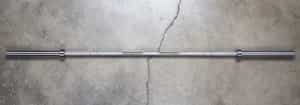
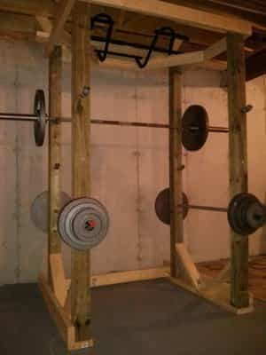
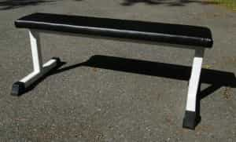

Kullervo is a chauvinist bastard from Finland. He's into developing his body with weights, his belly with food and his mind with classic literature.


So you’ve decided to start lifting and you’ve walked into your local gym. Inside you are greeted by a cute blonde behind the counter and walls painted orange or purple. You sign up for a membership and change your gear.
You will find that free weights are hard to find. Instead, the place is filled with treadmills and elliptical machines. You try to get in the mood but Lady Gaga is blasting of the radio. Focusing on your sets is difficult with all those 20-year-old girls in yoga pants.
While you wouldn’t want to find yourself in a bed with Bill Kazmaier, he doesn’t fuck with your focus at the gym.
A MRA would whine that gyms are not immune to the feminization of the society. A MGTOW would cancel his membership. You, however, will be kicked out for dropping your clean-and-jerks. Then you drive halfway across the town to find a meathead gym or go for possibly the most manly of options: building a gym of your very own.
First of all it must be stated, obviously, that this is not a possibility for everyone. To start with, you should have a place to build the gym in. Ideally, you own a house with a garage large enough. A little craftsmanship in carpentry or blacksmithing won’t hurt you. Other things to consider are the cost of the equipment and the time and effort to put in. Some equipment you can make pretty easily yourself; others you are probably better off buying.
Building is a gradual process. You will prioritize and acquire first what you need the most. Lets say you are into Olympic lifts. Then a solid platform is a must. For calisthenics a pull-up bar would be the number one thing. In the case of your average gym bro, here is a list of what you would need, roughly in the order of importance:

And enough plates for your needs. This beats dumbbells hands down in home gyms. Adjustable dumbbells are pain in the ass to use and solid ones would end up costing a fortune. Besides, try doing deadlifts or squats with dumbbells.
Forget the famous brands unless you want to spend a thousand bucks on an elongated piece of metal. That doesn’t mean you should buy the cheapest thing out there that will bend permanently at 315 pounds. A new quality barbell will set you back around $300, used ones obviously less. The internet is full of information on the best buys.
No floor can take continuous hits of hundreds of pounds. This is of utmost importance if we are talking about one’s home. My recommendation is to arrange old tires on their sides single file and have a sheet of thick plywood on top. Heck, put some rubber mat on top of that and the floor is safe and sound. Size can also be adjusted to your needs. If you are one of the good guys who quietly lower their weights, you can get along with the rubber mat alone.

You can buy one or you can build one. Either way, it should be strong. Commercial racks can be expensive, but they are easy to adjust. A handy man will improvise and use 6-by-6 lumber or railroad tracks. Make sure there are hooks at proper heights for squats and bench presses.
A tip: cover the hooks with rubber to protect the knurling of the barbell. Gyms are full of bars that cannot be used for snatch anymore as the knurling at the ends has been honed off by metal hooks.
The top of the rack is an ideal place to fit a pull-up bar. The interior you can equip with safety pins. Those come in handy when bench pressing.

Unless you are into sewing leather, this is an item you should buy. Just don’t get one with too thick a padding. Those are unstable to lift of. Consider whether you want an adjustable one to allow incline press or a regular flat one. Flat benches usually beat the adjustable ones in stability.
With simply this hardware you can do a lot. From here on it is completely up to you. I have seen people build leg presses, cable machines, heavy bags, stripper poles and everything in between. Also, strongman training goes hand-in-hand with garage gyms. If there is some space outside, like a parking lot, the next additions could be farmer’s walk handles, easy-peasy to make with a little welding skills.
What about cardio? Running is boring and results in injury. Find an old truck tire and a sledgehammer and put your back into it, or make a jump rope out of metal wire and learn dancing.
African ingenuity
While by staying home you avoid the broscience, you also lose the valuable advice of other men. Gyms should, along with being sports facilities, serve as places to find other like-minded men to get to know and share masculine ideas with. Insofar as solitude can be precious when training, so can having a spotter. Naturally you can invite others to train with you, but then you may need more space and equipment.
Evidently, a project like this takes time, depending on how much you build yourself of course, and shouldn’t be taken up unless one is going to enjoy the process itself. Money-wise, you can get a year’s cheap gym membership with the price of a mere barbell. In the long run, you may break even or save some money. That should not be a ruling factor here though.
A huge upside is certainly the chance to avoid the problems of generic modern gyms. No more waiting to use the barbells. No more complaints about grunting and dropping weights. No more notifications on the wall banning the use of chalk. Simply put, you do what you want to. It is your gym and your responsibility.
U mirin’ brah?
Lets say you found your unicorn, married her and made children. Gyms are usually off-limits for kids and possibly, in the future, for teenagers too. While we wait for this great advice to be implemented, you wouldn’t want to count on school gym classes either.
Football with the neighborhood kids is becoming increasingly rare, with electronic screens becoming the preferred pastime. A garage gym is the place for introducing your offspring to sports. Children’s wrestling classes, for example, only allow so much. At home you control what they do, what they learn, and make sure they are safe and ready to take on real sports classes in a couple of years.
When choosing a gym, try to avoid the big chains with the word “fitness” in their name. Meathead gyms are usually not found there. If you choose to train at home, understand that a home gym is more than a spider-looking Weider Home Gym machine. Building a place of your own is not a possibility for everyone. While it takes work, the results are rewarding and you get to exercise your natural manly instincts to invent and create. Lastly, there’s no better place to take your kids to for their first workout.
Read More: Build A Bachelor Pad And Save The World